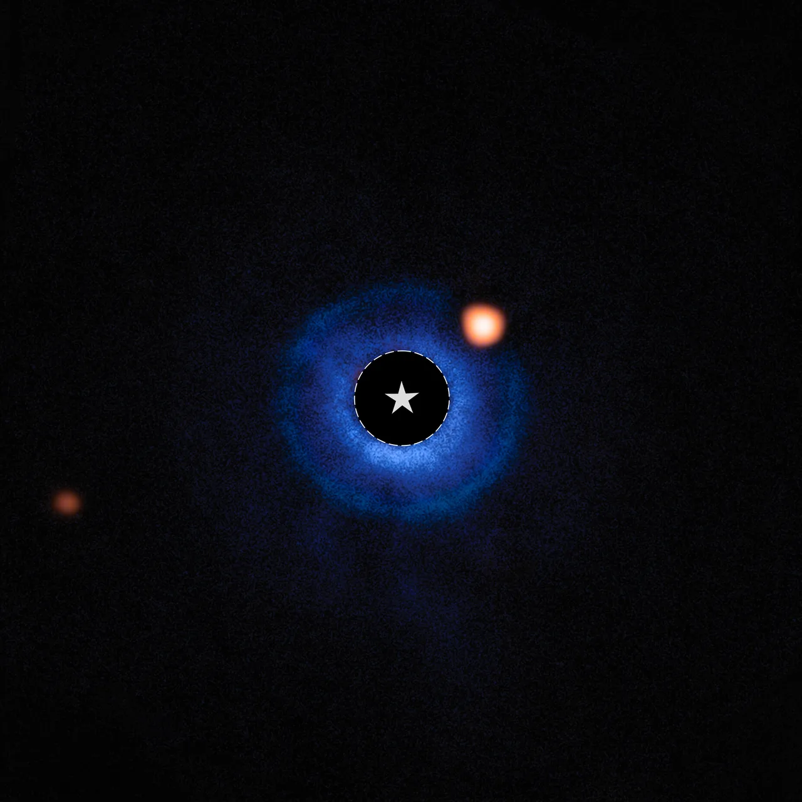

25. Juni 2025
Webb bildet möglichen Planeten von der Masse des Saturn direkt ab
Mit dem Koronographen seines MIRI-Instruments hat das James Webb Space Telescope in der Staubscheibe um den jungen Stern TWA 7 ein Objekt direkt abgebildet, bei dem es sich mit hoher Wahrscheinlichkeit um einen Planeten handelt. TWA 7 b wäre der erste Exoplanet, den das JWST auf diese Weise selbst entdeckt hat. Mit etwa der Masse des Saturns wäre er zugleich der leichteste bisher direkt abgebildete Exoplanet. Er befindet sich in einer Lücke eines der Staubringe um den rund 111 Lichtjahre entfernten Stern, genau dort, wo ein Planet dieser Masse erwartet wurde, der die Staubscheibe formt.
Quelle: ESA/Webb: "Webb captures evidence of a lightweight planet around TWA 7." Online; esawebb.org; 25.06.2025